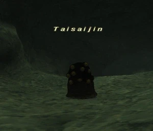

Level 75 reference · Zenith rules
|
Job: Black Mage Notorious Monster |
 |

|
Zone |
Level |
Drops |
Steal |
Spawns |
Notes |
|
60-63 |
1 |
A, H | |||
|
HP = Detects Low HP; M = Detects Magic; Sc = Follows by Scent; T(S) = True-sight; T(H) = True-hearing JA = Detects job abilities; WS = Detects weaponskills; Z(D) = Asleep in Daytime; Z(N) = Asleep at Nighttime | |||||
Notes:
- The respawn time is rumored to be 72 hours (Earth time), and then every 24 hours thereafter.
- In order for this NM to appear, no Taisai can be disturbed during the respawn period.
- Engaging of even one Taisai will cause the respawn timer to reset. This includes charming or aggroing any of the Taisai.
- If all Taisai are left untouched for the duration of the respawn time, one of the existing Taisai will despawn to be replaced by Taisaijin.
- If only Taisaijin is defeated, but no other Taisai is engaged for the following 24 hours, Taisaijin will spawn again, replacing one of the untouched Taisai.
- Note: The respawn time is not exactly 24 hours. There appears to be a window of +/- one hour earth time. If Taisaijin is killed during the first 30 minutes of the Vana'diel hour, there is a slight chance that Taisaijin will spawn one hour earlier. If Taisaijin is killed during last 30 minutes of the Vana'diel hour, there is a slight chance that Taisaijin will spawn one hour later. The window could more accurately be described as 23 - 25 hours, or 71 - 73 hours.
Cultural Background
Taisaijin is Japanese for either "grand festival god", "king of the grand year", "grand festival", or "large age".
In-Game Background
Taisaijin is widely believed to be a joke-NM based on an in-joke that isn't commonly known among English-speaking players. The Red Mage magic spell Refresh was introduced to Final Fantasy XI in the February 5, 2003 update.
At the time Refresh was introduced, the methods and locations for obtaining the scroll were still largely unknown. As the story goes, before the whereabouts of Refresh became known, one Japanese Red Mage claimed that he had gotten a Refresh scroll as a drop from a Taisai in Ranguemont Pass. The rumor eventually spread, and for a period of time, Taisai were being farmed constantly for the scroll. The truth is, that Red Mage lied. Refresh is not, nor has it ever been, a drop from Taisai. That Red Mage had discovered one of the actual methods for obtaining Refresh and proceeded to monopolize that source, profiting from the advantage since there was no competition for it and everyone was deceived into farming Taisais.
This incident would give rise to an in-joke among Japanese players. When another player asked where to find a newly introduced item that no one yet knew how to obtain, a common phrase became: "I found it on a Taisai".
Taisaijin drops a Scroll of Refresh and Spelunker's Hat, a piece of equipment called the "Anti-Optical Hat" due to it having completely opposite stats to the Optical Hat, which also drops from a Hecteyes mob. Square-Enix added the Refresh drop as irony, where, if players do not kill Taisai for a long enough time, Taisaijin, a mob which does actually drop the scroll, will appear. Spelunker's Hat was likely added as a nod to the fact that people were farming Taisai, which had no useful item, meaning Taisaijin has nothing a player would want (besides as a trophy item, though the title itself, Bye-Bye, Taisai, can be considered a trophy).
Adapted from Eden Wiki: Taisaijin · Contributors and history · CC BY-SA 4.0. Revision 44945. Layout, links and optional background text adapted for Zenith.